산업안전지도사 (2019-03-30 기출문제)
1과목: 산업안전보건법령
1. 산업안전보건법령상 법령 요지의 게시 등과 안전ㆍ보건표지의 부착 등에 관한 설명으로 옳지 않은 것은?
- 근로자대표는 작업환경측정의 결과를 통지할 것을 사업주에게 요청할 수 있고, 사업주는 이에 성실히 응하여야 한다.
- 야간에 필요한 안전ㆍ보건표지는 야광물질을 사용하는 등 쉽게 알아볼 수 있도록 제작하여야 한다.
- 안전ㆍ보건표지의 표시를 명백히 하기 위하여 필요한 경우에는 안전ㆍ보건표지의 주위에 표시사항을 글자로 덧붙여 적을 수 있으며, 이 경우 글자는 노란색 바탕에 검은색 한글고딕체로 표기하여야 한다.
- 안전ㆍ보건표지의 성질상 설치하거나 부착하는 것이 곤란한 경우에는 해당 물체에 직접 도장(塗裝)할 수 있다.
- 사업주는 산업안전보건법과 산업안전보건법에 따른 명령의 요지를 상시 각 작업장 내에 근로자가 쉽게 볼 수 있는 장소에 게시하거나 갖추어 두어 근로자로 하여금 알게 하여야 한다.
(정답률: 84%)

2. 산업안전보건법령상 용어에 관한 설명으로 옳은 것을 모두 고른 것은?
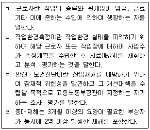
- ㄱ, ㄴ
- ㄱ, ㄹ
- ㄴ, ㄷ
- ㄷ, ㄹ
- ㄴ, ㄷ, ㄹ
(정답률: 79%)
3. 사업주 갑(甲)의 사업장에 산업재해가 발생하였다. 이 경우 갑(甲)이 기록ㆍ보존해야 할 사항으로 산업안전보건법령상 명시되지 않은 것은? (다만, 법령에 따른 산업재해조사표 사본을 보존하거나 요양신청서의 사본에 재해재발방지 계획을 첨부하여 보존한 경우에 해당하지 아니 한다.)
- 사업장의 개요
- 근로자의 인적 사항 및 재산 보유현황
- 재해 발생의 일시 및 장소
- 재해 발생의 원인 및 과정
- 재해 재발방지 계획
(정답률: 86%)
4. 산업안전보건법령상 안전ㆍ보건 관리체제에 관한 설명으로 옳지 않은 것은?
- 사업주는 안전보건관리책임자를 선임하였을 때에는 그 선임 사실 및 법령에 따른 업무의 수행내용을 증명할 수 있는 서류를 갖춰 둬야 한다.
- 안전보건관리책임자는 안전관리자와 보건관리자를 지휘ㆍ감독한다.
- 사업주는 안전보건조정자로 하여금 근로자의 건강진단 등 건강관리에 관한 업무를 총괄관리하도록 하여야 한다.
- 사업주는 관리감독자에게 법령에 따른 업무 수행에 필요한 권한을 부여하고 시설ㆍ장비ㆍ예산, 그 밖의 업무수행에 필요한 지원을 하여야 한다.
- 사업주는 안전보건관리책임자에게 법령에 따른 업무를 수행하는 데 필요한 권한을 주어야 한다.
(정답률: 82%)
5. 산업안전보건법령상 안전보건관리규정에 관한 설명으로 옳지 않은 것은?
- 소프트웨어 개발 및 공급업에서 상시 근로자 100명을 사용하는 사업장은 안전보건관리규정을 작성하여야 한다.
- 안전보건관리규정의 내용에는 작업지휘자 배치 등에 관한 사항이 포함되어야 한다.
- 안전보건관리규정은 해당 사업장에 적용되는 단체협약 및 취업규칙에 반할 수 없다.
- 안전보건관리규정에 관하여는 산업안전보건법에서 규정한 것을 제외하고는 그 성질에 반하지 아니하는 범위에서 「근로기준법」의 취업규칙에 관한 규정을 준용한다.
- 사업주가 법령에 따라 안전보건관리규정을 작성하거나 변경할 때에는 산업안전보건위원회가 설치되어 있지 아니한 사업장의 경우에는 근로자대표의 동의를 받아야 한다.
(정답률: 75%)
6. 산업안전보건법령상 산업안전보건위원회의 심의ㆍ의결을 거쳐야 하는 사항에 해당하지 않는 것은?
- 유해하거나 위험한 기계ㆍ기구와 그 밖의 설비를 도입한 경우 안전ㆍ보건조치에 관한 사항
- 안전ㆍ보건과 관련된 안전장치 구입 시의 적격품 여부 확인에 관한 사항
- 산업재해에 관한 통계의 기록 및 유지에 관한 사항
- 산업재해 예방계획의 수립에 관한 사항
- 근로자의 안전ㆍ보건교육에 관한 사항
(정답률: 57%)
7. 산업안전보건법령상 안전관리자 및 보건관리자 등에 관한 설명으로 옳지 않은 것은?
- 사업주가 안전관리자를 배치할 때에는 연장근로ㆍ야간근로 또는 휴일근로 등 해당 사업장의 작업 형태를 고려하여야 한다.
- 건설업을 제외한 사업으로서 상시 근로자 300명 미만을 사용하는 사업의 사업주는 안전관리자의 업무를 안전관리전문기관에 위탁할 수 있다.
- 안전관리전문기관은 고용노동부장관이 정하는 바에 따라 안전관리 업무의 수행 내용, 점검 결과 및 조치 사항 등을 기록한 사업장관리카드를 작성하여 갖추어 두어야 한다.
- 지방고용노동관서의 장은 중대재해가 연간 2건 이상 발생한 경우에는 사업주에게 안전관리자ㆍ보건관리자를 교체하여 임명할 것을 명할 수 있다.
- 고용노동부장관은 안전관리전문기관이 업무정지 기간 중에 업무를 수행한 경우 그 지정을 취소하여야 한다.
(정답률: 69%)
8. 산업안전보건법령상 도급 금지 및 도급사업의 안전ㆍ보건에 관한 설명으로 옳지 않은 것은?
- 유해하거나 위험한 작업을 도급 줄 때 지켜야 할 안전ㆍ보건조치의 기준은 고용노동부령으로 정한다.
- 도금작업은 하도급인 경우를 제외하고는 고용노동부장관의 인가를 받지 아니하면 그 작업만을 분리하여 도급을 줄 수 없다.
- 법령상 구성 및 운영되어야 하는 안전ㆍ보건에 관한 협의체는 도급인인 사업주 및 그의 수급인인 사업주 전원으로 구성하여야 한다.
- 법령상 작업장의 순회점검 등 안전ㆍ보건관리를 하여야 하는 도급인인 사업주는 토사석 광업의 경우 2일에 1회 이상 작업장을 순회점검하여야 한다.
- 건설공사를 타인에게 도급하는 자는 자신의 책임으로 시공이 중단된 사유로 공사가 지연되어 그의 수급인이 산업재해 예방을 위하여 공사기간 연장을 요청하는 경우 특별한 사유가 없으면 그 연장 조치를 하여야 한다.
(정답률: 63%)
9. 산업안전보건법령상 안전보건관리책임자 등에 대한 직무교육에 관한 설명으로 옳은 것은?
- 법령에 따른 안전보건관리책임자에 해당하는 사람이 해당 직위에 위촉된 경우에는 직무교육을 이수한 것으로 본다.
- 법령에 따른 보건관리자가 의사인 경우에는 채용된 후 6개월 이내에 직무를 수행하는 데 필요한 신규교육을 받아야 한다.
- 법령에 따른 안전보건관리담당자에 해당하는 사람은 선임된 후 매 2년이 되는 날을 기준으로 전후 3개월 사이에 고용노동부장관이 실시하는 안전ㆍ보건에 관한 보수교육을 받아야 한다.
- 직무교육기관의 장은 직무교육을 실시하기 30일 전까지 교육 일시 및 장소 등을 직무교육 대상자에게 알려야 한다.
- 직무교육을 이수한 사람이 다른 사업장으로 전직하여 신규로 선임된 경우로서 선임신고 시 전직 전에 받은 교육이수증명서를 제출하면 해당 교육의 2분의 1을 이수한 것으로 본다.
(정답률: 63%)
10. 산업안전보건법령상 고객의 폭언등으로 인한 건강장해를 예방하기 위하여 사업주가 조치하여야 하는 것으로 명시된 것은?
- 업무의 일시적 중단 또는 전환
- 고객과의 문제 상황 발생 시 대처방법 등을 포함하는 고객응대업무 매뉴얼 마련
- 근로기준법에 따른 휴게시간의 연장
- 폭언등으로 인한 건강장해 관련 치료
- 관할 수사기관에 증거물을 제출하는 등 고객응대근로자가 폭언등으로 인하여 고소, 고발 등을 하는 데 필요한 지원
(정답률: 73%)
11. 산업안전보건법령상 사업주가 근로자에 대하여 실시하여야 하는 근로자 안전ㆍ보건교육의 내용 중 관리감독자 정기안전ㆍ보건교육의 내용에 해당하지 않는 것은?(오류 신고가 접수된 문제입니다. 반드시 정답과 해설을 확인하시기 바랍니다.)
- 산업재해보상보험 제도에 관한 사항
- 산업보건 및 직업병 예방에 관한 사항
- 유해ㆍ위험 작업환경 관리에 관한 사항
- 「산업안전보건법」및 일반관리에 관한 사항
- 표준안전작업방법 및 지도 요령에 관한 사항
(정답률: 67%)
12. 산업안전보건법령상 안전검사대상 유해ㆍ위험기계등의 검사 주기가 공정안전보고서를 제출하여 확인을 받은 경우 최초 안전검사를 실시한 후 4년마다인 것은?
- 이삿짐운반용 리프트
- 고소작업대
- 이동식 크레인
- 압력용기
- 원심기
(정답률: 57%)
13. 산업안전보건법령상 지게차에 설치하여야 할 방호장치에 해당하지 않는 것은?
- 헤드 가드
- 백레스트(backrest)
- 전조등
- 후미등
- 구동부 방호 연동장치
(정답률: 83%)
14. 산업안전보건법령상 불도저를 대여 받는 자가 그가 사용하는 근로자가 아닌 사람에게 불도저를 조작하도록 하는 경우 조작하는 사람에게 주지시켜야 할 사항으로 명시되지 않은 것은?
- 작업의 내용
- 지휘계통
- 연락ㆍ신호 등의 방법
- 제한속도
- 면허의 갱신
(정답률: 69%)
15. 산업안전보건법령상 설치ㆍ이전하는 경우 안전인증을 받아야 하는 기계ㆍ기구에 해당하는 것은?
- 프레스
- 곤돌라
- 롤러기
- 사출성형기(射出成形機)
- 기계톱
(정답률: 71%)
16. 산업안전보건법령상 자율안전확인의 신고 및 자율안전확인대상 기계ㆍ기구 등에 관한 설명으로 옳지 않은 것은?
- 휴대형 연마기는 자율안전확인대상 기계ㆍ기구등에 해당한다.
- 연구ㆍ개발을 목적으로 산업용 로봇을 제조하는 경우에는 신고를 면제할 수 있다.
- 파쇄ㆍ절단ㆍ혼합ㆍ제면기가 아닌 식품가공용기계는 자율안전확인대상 기계ㆍ기구등에 해당하지 않는다.
- 자동차정비용 리프트에 대하여 안전인증을 받은 경우에는 그 안전인증이 취소되거나 안전인증표시의 사용 금지 명령을 받은 경우가 아니라면 신고를 면제 할 수 있다.
- 인쇄기에 대하여 고용노동부령으로 정하는 다른 법령에서 안전성에 관한 검사나 인증을 받은 경우에는 신고를 면제할 수 있다.
(정답률: 60%)
17. 산업안전보건기준에 관한 규칙상 근로자가 주사 및 채혈 작업을 하는 경우 사업주가 하여야 할 조치에 해당하지 않는 것은?
- 안정되고 편안한 자세로 주사 및 채혈을 할 수 있는 장소를 제공할 것
- 채취한 혈액을 검사 용기에 옮기는 경우에는 주사침 사용을 금지하도록 할 것
- 사용한 주사침의 바늘을 구부리는 행위를 금지할 것
- 사용한 주사침의 뚜껑을 부득이하게 다시 씌워야 하는 경우에는 두 손으로 씌우도록 할 것
- 사용한 주사침은 안전한 전용 수거용기에 모아 튼튼한 용기를 사용하여 폐기할 것
(정답률: 69%)
18. 산업안전보건법령상 건강 및 환경 유해성 분류기준에 관한 설명으로 옳지 않은 것은?
- 입 또는 피부를 통하여 1회 투여 또는 8시간 이내에 여러 차례로 나누어 투여하거나 호흡기를 통하여 8시간 동안 흡입하는 경우 유해한 영향을 일으키는 물질은 급성 독성 물질이다.
- 접촉 시 피부조직을 파괴하거나 자극을 일으키는 물질은 피부 부식성 또는 자극성 물질이다.
- 호흡기를 통하여 흡입되는 경우 기도에 과민반응을 일으키는 물질은 호흡기 과민성 물질이다.
- 자손에게 유전될 수 있는 사람의 생식세포에 돌연변이를 일으킬 수 있는 물질은 생식세포 변이원성 물질이다.
- 단기간 또는 장기간의 노출로 수생생물에 유해한 영향을 일으키는 물질은 수생 환경 유해성 물질이다.
(정답률: 78%)
19. 산업안전보건법령상 건강진단에 관한 내용으로 ( )에 들어갈 내용을 순서대로 옳게 나열한 것은?
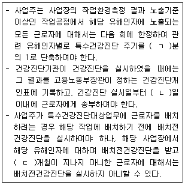
- ㄱ: 2, ㄴ: 15, ㄷ: 3
- ㄱ: 2, ㄴ: 30, ㄷ: 3
- ㄱ: 2, ㄴ: 30, ㄷ: 6
- ㄱ: 3, ㄴ: 30, ㄷ: 6
- ㄱ: 3, ㄴ: 60, ㄷ: 9
(정답률: 74%)
20. 산업안전보건법령상 근로의 금지 및 제한에 관한 설명으로 옳은 것은?
- 사업주는 신장 질환이 있는 근로자가 근로에 의하여 병세가 악화될 우려가 있는 경우에 근로자의 동의가 없으면 근로를 금지할 수 없다.
- 사업주는 질병자의 근로를 다시 시작하도록 하는 경우에는 미리 보건관리자(의사가 아닌 보건관리자도 포함한다), 산업보건의 또는 건강진단을 실시한 의사의 의견을 들어야 한다.
- 사업주는 관절염에 해당하는 질병이 있는 근로자를 고기압 업무에 종사시킬 수있다.
- 사업주는 갱내에서 하는 작업에 종사하는 근로자에게는 1일 6시간, 1주 34시간을 초과하여 근로하게 하여서는 아니 된다.
- 사업주는 인력으로 중량물을 취급하는 작업에서 유해ㆍ위험 예방조치 외에 작업과 휴식의 적정한 배분, 그 밖에 근로시간과 관련된 근로조건의 개선을 통하여 근로자의 건강 보호를 위한 조치를 하여야 한다.
(정답률: 67%)
21. 산업안전보건법령상 안전보건개선계획 등에 관한 설명으로 옳지 않은 것은?
- 사업주는 안전보건개선계획을 수립할 때에는 산업안전보건위원회가 설치되어 있지 아니한 사업장의 경우에는 근로자대표의 의견을 들어야 한다.
- 사업주와 근로자는 안전보건개선계획을 준수하여야 한다.
- 안전보건개선계획의 수립ㆍ시행명령을 받은 사업주는 고용노동부장관이 정하는 바에 따라 안전보건개선계획서를 작성하여 그 명령을 받은 날부터 60일 이내에 관할 지방고용노동관서의 장에게 제출하여야 한다.
- 직업병에 걸린 사람이 연간 1명 발생한 사업장은 안전ㆍ보건진단을 받아 안전보건개선계획을 수립ㆍ제출하도록 지방고용노동관서의 장이 명할 수 있는 사업장에 해당한다.
- 안전보건개선계획서에는 시설, 안전ㆍ보건관리체제, 안전ㆍ보건교육, 산업재해 예방 및 작업환경의 개선을 위하여 필요한 사항이 포함되어야 한다.
(정답률: 76%)
22. 산업안전보건법령상 산업재해 발생 사실을 은폐하도록 교사(敎唆)하거나 공모(共謀)한 자에게 적용되는 벌칙은?
- 500만원 이하의 벌금
- 1년 이하의 징역 또는 1천만원 이하의 벌금
- 3년 이하의 징역 또는 3천만원 이하의 벌금
- 5년 이하의 징역 또는 5천만원 이하의 벌금
- 7년 이하의 징역 또는 1억원 이하의 벌금
(정답률: 65%)
23. 산업안전보건법령상 작업환경측정 등에 관한 설명으로 옳지 않은 것은?
- 사업주는 작업환경측정의 결과를 해당 작업장 근로자에게 알려야 하며 그 결과에 따라 근로자의 건강을 보호하기 위하여 해당 시설ㆍ설비의 설치ㆍ개선 또는 건강진단의 실시 등 적절한 조치를 하여야 한다.
- 사업주는 산업안전보건위원회 또는 근로자대표가 요구하면 작업환경측정 결과에 대한 설명회를 직접 개최하거나 작업환경측정을 한 기관으로 하여금 개최하도록 하여야 한다.
- 고용노동부장관은 작업환경측정의 수준을 향상시키기 위하여 매년 지정측정기관을 평가한 후 그 결과를 공표하여야 한다.
- 고용노동부장관은 작업환경측정 결과의 정확성과 정밀성을 평가하기 위하여 필요하다고 인정하는 경우에는 신뢰성평가를 할 수 있다.
- 시설ㆍ장비의 성능은 고용노동부장관이 지정측정기관의 작업환경측정 수준을 평가하는 기준에 해당한다.
(정답률: 72%)
24. 갑(甲)은 전국 규모의 사업주단체에 소속된 임직원으로서 해당 단체가 추천하여 법령에 따라 위촉된 명예감독관이다. 산업안전보건법령상 갑(甲)의 업무가 아닌 것을 모두 고른 것은?
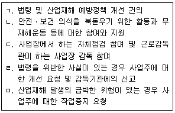
- ㄱ, ㄴ, ㄷ
- ㄱ, ㄴ, ㅁ
- ㄱ, ㄷ, ㄹ
- ㄴ, ㄹ, ㅁ
- ㄷ, ㄹ, ㅁ
(정답률: 63%)
25. 산업안전보건법령상 산업재해 예방사업 보조ㆍ지원의 취소에 관한 설명으로 옳지 않은 것은?
- 거짓으로 보조ㆍ지원을 받은 경우 보조ㆍ지원의 전부를 취소하여야 한다.
- 보조ㆍ지원 대상을 임의매각ㆍ훼손ㆍ분실하는 등 지원 목적에 적합하게 유지ㆍ관리ㆍ사용하지 아니한 경우 보조ㆍ지원의 전부 또는 일부를 취소하여야 한다.
- 보조ㆍ지원이 산업재해 예방사업의 목적에 맞게 사용되지 아니한 경우 보조ㆍ지원의 전부 또는 일부를 취소하여야 한다.
- 보조ㆍ지원 대상 기간이 끝나기 전에 보조ㆍ지원 대상 시설 및 장비를 국외로 이전 설치한 경우 보조ㆍ지원의 전부 또는 일부를 취소하여야 한다.
- 사업주가 보조ㆍ지원을 받은 후 5년 이내에 해당 시설 및 장비의 중대한 결함이나 관리상 중대한 과실로 인하여 근로자가 사망한 경우 보조ㆍ지원의 전부를 취소하여야 한다.
(정답률: 73%)
2과목: 산업안전일반
26. TWI(Training Within Industry) 교육훈련내용 중 사람을 다루는 방법(인간관계 관리기법)에 대한 훈련인 것은?
- JIT(Job Instruction Training)
- JMT(Job Method Training)
- JRT(Job Relation Training)
- CCS(Civil Communication Section)
- MTP(Management Training Program)
(정답률: 63%)
27. 산업안전보건법령상 사업주가 근로자에 대하여 실시하여야 하는 교육 중 채용 시 및 작업내용 변경 시의 교육내용으로 명시되어 있는 것이 아닌 것은?
- 기계ㆍ기구의 위험성과 작업의 순서 및 동선에 관한 사항
- 작업 개시 전 점검에 관한 사항
- 정리정돈 및 청소에 관한 사항
- 사고 발생 시 재해조사 및 방지계획에 관한 사항
- 산업보건 및 직업병 예방에 관한 사항
(정답률: 63%)
28. 하인리히(H.W.Heinrich)의 재해코스트 산정 시 간접비에 해당하는 것을 모두 고른 것은?
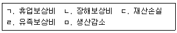
- ㄱ, ㄴ
- ㄱ, ㅁ
- ㄴ, ㄹ
- ㄷ, ㄹ
- ㄷ, ㅁ
(정답률: 66%)
29. 산업안전보건기준에 관한 규칙상 지게차에 관한 내용으로 옳지 않은 것은?
- 사업주는 화물의 낙하에 의하여 지게차의 운전자에게 위험을 미칠 우려가 있는 경우에는 지게차 최대하중의 1.5배 값(3톤을 넘는 값에 대해서는 3톤으로 한다)의 등분포정하중에 견딜 수 있는 헤드가드를 갖추어야 한다.
- 사업주는 백레스트(backrest)를 갖추지 아니한 지게차를 사용해서는 아니 된다. 다만, 마스트의 후방에서 화물이 낙하함으로써 근로자가 위험해질 우려가 없는 경우에는 그러하지 아니하다.
- 사업주는 전조등과 후미등을 갖추지 아니한 지게차를 사용해서는 아니 된다. 다만, 작업을 안전하게 수행하기 위하여 필요한 조명이 확보되어 있는 장소에서 사용하는 경우에는 그러하지 아니하다.
- 사업주는 앉아서 조작하는 방식의 지게차를 운전하는 근로자에게 좌석 안전띠를 착용하도록 하여야 한다.
- 사업주는 지게차에 의한 하역운반작업에 사용하는 팔레트(pallet)는 적재하는 화물의 중량에 따른 충분한 강도를 가지고 심한 손상ㆍ변형 또는 부식이 없는 것을 사용하여야 한다.
(정답률: 66%)
30. 사업장 위험성평가에 관한 지침에서 위험성 추정 시 유의사항으로 옳지 않은 것은?
- 예상되는 부상 또는 질병의 대상자 및 내용을 명확하게 예측할 것
- 최악의 상황에서 가장 큰 부상 또는 질병의 중대성을 추정할 것
- 부상 또는 질병의 중대성은 부상이나 질병 등의 종류에 따라 각각 별도의 척도를 사용하는 것이 바람직하며, 기본적으로 부상 또는 질병에 의한 요양기간 또는 근로손실 일수 등을 척도로 사용하지 아니 할 것
- 기계ㆍ기구, 설비, 작업 등의 특성과 부상 또는 질병의 유형을 고려할 것
- 유해성이 입증되어 있지 않은 경우에도 일정한 근거가 있는 경우에는 그 근거를 기초로 하여 유해성이 존재하는 것으로 추정할 것
(정답률: 68%)
31. 다음에서 설명하는 논리기호의 명칭은?
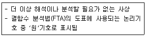
- 결함사상
- 기본사상
- 이하 생략의 결함사상
- 통상사상
- 전이기호
(정답률: 62%)
32. 산업안전보건기준에 관한 규칙상 통로에 관한 내용으로 옳지 않은 것은?
- 가설통로를 설치하는 경우 경사가 15도를 초과하는 경우에는 미끄러지지 아니하는 구조로 설치하여야 한다.
- 사다리식 통로를 설치하는 경우 사다리의 상단은 걸쳐놓은 지점으로부터 60센티미터 이상 올라가도록 설치하여야 한다.
- 계단 및 계단참을 설치하는 경우 매제곱미터당 400킬로그램 이상의 하중에 견딜 수 있는 강도를 가진 구조로 설치하여야 한다.
- 높이가 3미터를 초과하는 계단에 높이 3미터 이내마다 너비 1.2미터 이상의 계단참을 설치하여야 한다.
- 높이 1미터 이상인 계단의 개방된 측면에 안전난간을 설치하여야 한다.
(정답률: 64%)
33. 인간공학에서는 인간의 신체적 특성과 인지적 특성을 고려하여 제품을 설계한다. 인간특성과 설계사례의 연결로 옳지 않은 것은?
- 신체적 특성 - 사용자의 손 크기를 고려한 박스의 손잡이 설계
- 인지적 특성 - 전자레인지가 작동 중에 문을 열면 작동을 멈추도록 하는 인터락 설계
- 신체적 특성 - 오금 높이를 기준으로 책상용 의자의 높이를 설계
- 인지적 특성 - 작업자의 팔 행동반경을 고려하여 조종 장치를 배치
- 인지적 특성 - 전화기 버튼을 누르면, 눌릴 때 마다 청각적 피드백을 제공하는 설계
(정답률: 63%)
34. 인간이 느끼는 음량크기에 관한 내용으로 옳지 않은 것은?
- phon은 특정 음과 같은 크기로 들리는 1,000 Hz 순음의 음압수준(dB) 값으로 정의된다.
- 40 phon은 20 phon 보다 2배 큰 음이다.
- 2 sone은 1 sone의 2배 크기의 음이다.
- 등음량 곡선은 주파수를 변화시켜 가면서 같은 크기로 들리는 음압수준(dB)들을 연결한 곡선이다.
- 1 sone은 1,000 Hz, 40 dB인 음의 크기이다.
(정답률: 58%)
35. 근골격계 질환 예방을 위한 유해요인 평가방법 중 안전하게 작업할 수 있는 중량물의 허용중량 한계(RWL)를 계산할 수 있는 평가방법은?
- OWAS
- REBA
- RULA
- NIOSH Lifting Guidelines
- Strain Index
(정답률: 62%)
36. 1 칸델라(cd)의 점광원으로부터 2 m 떨어진 곳의 조도는 얼마인가?
- 0.25 lux
- 0.5 lux
- 1 lux
- 2 lux
- 3 lux
(정답률: 60%)
37. 고장률(failure rate)에 관한 내용으로 옳은 것을 모두 고른 것은?
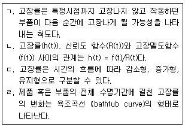
- ㄱ, ㄴ
- ㄴ, ㄷ
- ㄱ, ㄴ, ㄹ
- ㄴ, ㄷ, ㄹ
- ㄱ, ㄴ, ㄷ, ㄹ
(정답률: 54%)
38. 다음의 시각적 표지장치 중 정성적 표시장치는?
- 횡단보도의 삼색신호등
- 지침이 움직이는 중량계
- 디지털 시계
- 눈금이 움직이는 체중계
- 지침이 움직이는 시계
(정답률: 75%)
39. 다음에서 설명하고 있는 인간실수 유형은?
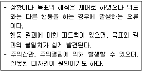
- 작위오류(commission error)
- 착오(mistake)
- 실수(slip)
- 시간오류(timing error)
- 위반(violation)
(정답률: 58%)
40. 다음 중 올바른 작업방법 설계 시 고려해야 할 사항으로 옳지 않은 것은?
- 동작을 천천히 하여 최대 근력을 얻도록 한다.
- 동작의 중간범위에서 최대한의 근력을 얻도록 한다.
- 가능하다면 중력의 방향으로 작업을 수행하도록 한다.
- 최대한 발휘할 수 있는 힘의 50 % 이상을 유지한다.
- 눈동자의 움직임을 최소화한다.
(정답률: 56%)
41. 작업장에서 근로자가 1일 8시간 작업하는 동안 90 dB(A)에서 4시간, 95dB(A)에서 4시간 소음에 노출되었다. 아래 허용노출시간표를 활용한 소음노출지수는 얼마인가?
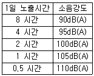
- 0.8
- 0.9
- 1.0
- 1.2
- 1.5
(정답률: 59%)
42. 사업장 위험성평가에 관한 지침에 명시하고 있는 “유해ㆍ위험요인이 부상 또는 질병으로 이어질 수 있는 가능성(빈도)과 중대성(강도)을 조합한 것”을 정의하는 용어는?
- 유해ㆍ위험요인
- 위험성 결정
- 위험성
- 위험성 추정
- 위험성 감소대책 수립 및 실행
(정답률: 59%)
43. 제조물 책임법에 관한 내용으로 옳지 않은 것은?
- 제조업자는 제조물의 결함으로 생명ㆍ신체 또는 재산에 손해를 입은 자에게 그 손해를 배상하여야 한다.
- 제조물이란 제조되거나 가공된 동산을 말한다.
- 제조상의 결함이란 제조업자가 제조물에 대하여 제조상ㆍ가공상의 주의의무를 이행하였는지에 관계없이 제조물이 원래 의도한 설계와 다르게 제조ㆍ가공됨으로써 안전하지 못하게 된 경우를 말한다.
- 설계상의 결함이란 제조업자가 합리적인 설명ㆍ지시ㆍ경고 또는 그 밖의 표시를 하였더라면 해당 제조물에 의하여 발생할 수 있는 피해나 위험을 줄이거나 피할 수 있었음에도 이를 하지 아니한 경우를 말한다.
- 제조물의 제조ㆍ가공 또는 수입을 업으로 하는 자는 제조업자에 해당한다.
(정답률: 68%)
44. 위험성평가(risk assessment)를 실시하는 절차를 순서대로 옳게 나열한 것은?
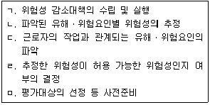
- ㄷ→ ㄴ→ㄹ →ㅁ→ ㄱ
- ㄷ→ ㅁ→ㄴ →ㄱ→ ㄹ
- ㄷ→ ㅁ→ㄴ →ㄹ→ ㄱ
- ㅁ→ ㄴ→ㄷ →ㄹ→ ㄱ
- ㅁ→ ㄷ→ㄴ →ㄹ→ ㄱ
(정답률: 55%)
45. 위험성 평가 시 유해위험요인의 발굴을 위해 4M기법을 활용한다. 다음 중인적(Man) 항목이 아닌 것은?
- 작업자세
- 개인 보호구 미착용
- 휴먼에러
- 관리조직의 결함 및 건강관리의 불량
- 미숙련자의 불안전한 행동
(정답률: 64%)
46. 국내 어느 사업장의 전년도 도수율은 3, 강도율은 27이었다. 이 사업장의 종합재해지수(FSI)는 얼마인가?
- 5
- 6
- 7
- 8
- 9
(정답률: 63%)
47. 다음 FT도에서 정상사상 X의 값은 얼마인가?
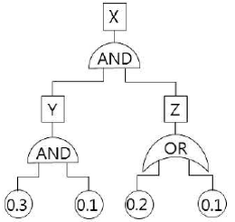
- 0.0084
- 0.3826
- 0.42
- 0.55
- 0.61
(정답률: 53%)
48. 안전관리 조직에 관한 설명으로 옳지 않은 것은?
- 안전관리 조직 형태는 라인형(Line type), 스태프형(Staff type), 라인스태프형(Line-staff type)으로 구분할 수 있다.
- 라인형은 회사내에 별도의 안전전담부서가 있으며 안전계획에서 실시까지 담당한다.
- 스태프형은 안전에 관한 전문지식축적과 기술개발이 용이한 장점이 있다.
- 라인스태프형은 명령 계통과 조언ㆍ권고적 참여가 혼돈되기 쉬운 단점이 있다.
- 소규모 사업장일수록 라인형이 적합하며, 규모가 큰 사업장일수록 라인스태프형이 적합하다.
(정답률: 71%)
49. 다음과 같은 특징을 가지고 있는 위험성평가 기법은?
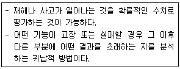
- 위험과 운전분석(HAZOP)
- 사건수분석(ETA)
- 예비위험분석(PHA)
- 체크리스트(Checklist)
- 고장 형태에 따른 영향분석(FMEA)
(정답률: 64%)
50. 하인리히(H.W.Heinrich)의 사고방지를 위한 기본 원리 5단계를 순서대로 옳게 나열한 것은?
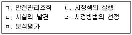
- ㄱ→ ㄷ→ㅁ →ㄹ→ ㄴ
- ㄱ→ ㅁ→ㄷ →ㄹ→ ㄴ
- ㄷ→ ㄹ→ㄴ →ㅁ→ ㄱ
- ㄷ→ ㅁ→ㄱ →ㄹ→ ㄴ
- ㄷ→ ㅁ→ㄹ →ㄴ→ ㄱ
(정답률: 67%)
3과목: 기업진단ㆍ지도
51. 직무관리에 관한 설명으로 옳지 않은 것은?
- 직무분석이란 직무의 내용을 체계적으로 분석하여 인사관리에 필요한 직무정보를 제공하는 과정이다.
- 직무설계는 직무 담당자의 업무 동기 및 생산성 향상 등을 목표로 한다.
- 직무충실화는 작업자의 권한과 책임을 확대하는 직무설계방법이다.
- 핵심직무특성 중 과업중요성은 직무담당자가 다양한 기술과 지식 등을 활용하도록 직무설계를 해야 한다는 것을 말한다.
- 직무평가는 직무의 상대적 가치를 평가하는 활동이며, 직무평가 결과는 직무급의 산정에 활용된다.
(정답률: 40%)
52. 노동조합에 관한 설명으로 옳지 않은 것은?
- 직종별 노동조합은 산업이나 기업에 관계없이 같은 직업이나 직종 종사자들에 의해 결성된다.
- 산업별 노동조합은 기업과 직종을 초월하여 산업을 중심으로 결성된다.
- 산업별 노동조합은 직종 간, 회사 간 이해의 조정이 용이하지 않다.
- 기업별 노동조합은 동일 기업에 근무하는 근로자들에 의해 결성된다.
- 기업별 노동조합에서는 근로자의 직종이나 숙련 정도를 고려하여 가입이 결정된다.
(정답률: 66%)
53. 조직구조 유형에 관한 설명으로 옳지 않은 것은?
- 기능별 구조는 부서 간 협력과 조정이 용이하지 않고 환경변화에 대한 대응이 느리다.
- 사업별 구조는 기능 간 조정이 용이하다.
- 사업별 구조는 전문적인 지식과 기술의 축적이 용이하다.
- 매트릭스 구조에서는 보고체계의 혼선이 야기될 가능성이 높다.
- 매트릭스 구조는 여러 제품라인에 걸쳐 인적자원을 유연하게 활용하거나 공유 할 수 있다.
(정답률: 46%)
54. JIT(just-in-time) 생산방식의 특징으로 옳지 않은 것은?
- 간판(kanban)을 이용한 푸시(push) 시스템
- 생산준비시간 단축과 소(小)로트 생산
- U자형 라인 등 유연한 설비배치
- 여러 설비를 다룰 수 있는 다기능 작업자 활용
- 불필요한 재고와 과잉생산 배제
(정답률: 50%)
55. 매슬로우(A. Maslow)의 욕구단계이론 중 자아실현욕구를 조직행동에 적용한 것은?
- 도전적 과업 및 창의적 역할 부여
- 타인의 인정 및 칭찬
- 화해와 친목분위기 조성 및 우호적인 작업팀 결성
- 안전한 작업조건 조성 및 고용 보장
- 냉난방 시설 및 사내식당 운영
(정답률: 69%)
56. 품질개선 도구와 그 주된 용도의 연결로 옳지 않은 것은?
- 체크시트(check sheet): 품질 데이터의 정리와 기록
- 히스토그램(histogram): 중심위치 및 분포 파악
- 파레토도(Pareto diagram): 우연변동에 따른 공정의 관리상태 판단
- 특성요인도(cause and effect diagram): 결과에 영향을 미치는 다양한 원인들을 정리
- 산점도(scatter plot): 두 변수 간의 관계를 파악
(정답률: 47%)
57. 어떤 프로젝트의 PERT(program evaluation and review technique) 네트워크와 활동소요시간이 아래와 같을 때, 옳지 않은 설명은?
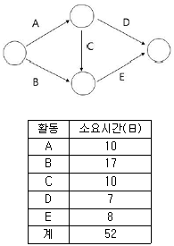
- 주경로(critical path)는 A-C-E이다.
- 프로젝트를 완료하는 데에는 적어도 28일이 필요하다.
- 활동 D의 여유시간은 11일이다.
- 활동 E의 소요시간이 증가해도 주경로는 변하지 않는다.
- 활동 A의 소요시간을 5일 만큼 단축시킨다면 프로젝트 완료시간도 5일 만큼 단축된다.
(정답률: 56%)
58. 공장의 설비배치에 관한 설명으로 옳은 것을 모두 고른 것은?
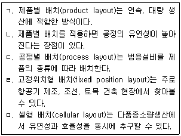
- ㄱ, ㅁ
- ㄱ, ㄹ, ㅁ
- ㄴ, ㄷ, ㄹ
- ㄱ, ㄴ, ㄹ, ㅁ
- ㄱ, ㄷ, ㄹ, ㅁ
(정답률: 7%)
59. 리더십 이론의 설명으로 옳은 것을 모두 고른 것은?
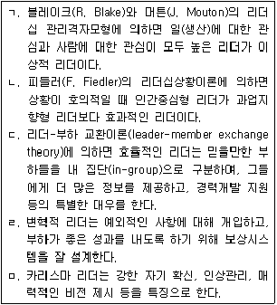
- ㄱ, ㄴ, ㄹ
- ㄱ, ㄷ, ㅁ
- ㄴ, ㄷ, ㄹ
- ㄱ, ㄴ, ㄷ, ㅁ
- ㄱ, ㄷ, ㄹ, ㅁ
(정답률: 43%)
60. 산업심리학의 연구방법에 관한 설명으로 옳지 않은 것은?
- 관찰법: 행동표본을 관찰하여 주요 현상들을 찾아 기술하는 방법이다.
- 사례연구법: 한 개인이나 대상을 심층 조사하는 방법이다.
- 설문조사법: 설문지 혹은 질문지를 구성하여 연구하는 방법이다.
- 실험법: 원인이 되는 종속변인과 결과가 되는 독립변인의 인과관계를 살펴보는 방법이다.
- 심리검사법: 인간의 지능, 성격, 적성 및 성과를 측정하고 정보를 제공하는 방법이다.
(정답률: 47%)
61. 일-가정 갈등(work-family conflict)에 관한 설명으로 옳지 않은 것은?
- 일과 가정의 요구가 서로 충돌하여 발생한다.
- 장시간 근무나 과도한 업무량은 일-가정 갈등을 유발하는 주요한 원인이 될수 있다.
- 적은 시간에 많은 것을 해내기를 원하는 경향이 강한 사람은 더 많은 일-가정 갈등을 경험한다.
- 직장은 일-가정 갈등을 감소시키는 데 중요한 역할을 담당하지 않는다.
- 돌봐 주어야 할 어린 자녀가 많을수록 더 많은 일-가정 갈등을 경험한다.
(정답률: 69%)
62. 인간의 정보처리 방식 중 정보의 한 가지 측면에만 초점을 맞추고 다른 측면은 무시하는 것은?
- 선택적 주의(selective attention)
- 분할 주의(divided attention)
- 도식(schema)
- 기능적 고착(functional fixedness)
- 분위기 가설(atmosphere hypothesis)
(정답률: 68%)
63. 다음에 해당하는 갈등 해결방식은?
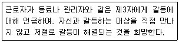
- 순응하기 방식(accommodating style)
- 협력하기 방식(collaborating style)
- 회피하기 방식(avoiding style)
- 강요하기 방식(forcing style)
- 타협하기 방식(compromising style)
(정답률: 75%)
64. 직무분석에 관한 설명으로 옳은 것을 모두 고른 것은?
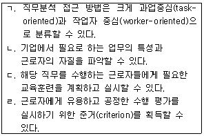
- ㄱ, ㄴ
- ㄴ, ㄷ
- ㄴ, ㄹ
- ㄱ, ㄷ, ㄹ
- ㄱ, ㄴ, ㄷ, ㄹ
(정답률: 50%)
65. 조명과 직무환경에 관한 설명으로 옳지 않은 것은?
- 조도는 어떤 물체나 표면에 도달하는 빛의 양을 말한다.
- 동일한 환경에서 직접조명은 간접조명보다 더 밝게 보이도록 하며, 눈부심과 눈의 피로도를 줄여준다.
- 눈부심은 시각 정보 처리의 효율을 떨어트리고, 눈의 피로도를 증가시킨다.
- 작업장에 조명을 설치할 때에는 빛의 밝기뿐만 아니라 빛의 배분도 고려해야 한다.
- 최적의 밝기는 작업자의 연령에 따라서 달라진다.
(정답률: 71%)
66. 다음 중 인간의 정보처리와 표시장치의 양립성(compatibility)에 관한 내용으로 옳은 것을 모두 고른 것은?
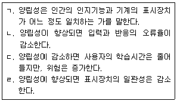
- ㄱ, ㄴ
- ㄴ, ㄷ
- ㄷ, ㄹ
- ㄱ, ㄴ, ㄹ
- ㄱ, ㄴ, ㄷ, ㄹ
(정답률: 63%)
67. 아래 그림에서 평행한 두 선분은 동일한 길이임에도 불구하고 위의 선분이 더 길어 보인다. 이러한 현상을 나타내는 용어는?
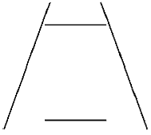
- 포겐도르프(Poggendorf) 착시현상
- 뮬러-라이어(M?ller-Lyer) 착시현상
- 폰조(Ponzo) 착시현상
- 티체너(Titchener) 착시현상
- 죌너(Z?llner) 착시현상
(정답률: 40%)
68. 다음 중 산업재해이론과 그 내용의 연결로 옳지 않은 것은?
- 하인리히(H. Heinrich)의 도미노 이론: 사고를 촉발시키는 도미노 중에서 불안전상태와 불안전행동을 가장 중요한 것으로 본다.
- 버드(F. Bird)의 수정된 도미노 이론: 하인리히(H. Heinrich)의 도미노 이론을 수정한 이론으로, 사고 발생의 근본적 원인을 관리 부족이라고 본다.
- 애덤스(E. Adams)의 사고연쇄반응 이론: 불안전행동과 불안전상태를 유발하거나 방치하는 오류는 재해의 직접적인 원인이다.
- 리전(J. Reason)의 스위스 치즈 모델: 스위스 치즈 조각들에 뚫려 있는 구멍들이 모두 관통되는 것처럼 모든 요소의 불안전이 겹쳐져서 산업재해가 발생한다는 이론이다.
- 하돈(W. Haddon)의 매트릭스 모델: 작업자의 긴장 수준이 지나치게 높을 때, 사고가 일어나기 쉽고 작업 수행의 질도 떨어지게 된다는 것이 핵심이다.
(정답률: 52%)
69. 국소배기장치의 환기효율을 위한 설계나 설치방법으로 옳지 않은 것은?
- 사각형관 닥트보다는 원형관 닥트를 사용한다.
- 공정에 방해를 주지 않는 한 포위형 후드로 설치한다.
- 푸쉬-풀(push-pull) 후드의 배기량은 급기량보다 많아야 한다.
- 공기보다 증기밀도가 큰 유기화합물 증기에 대한 후드는 발생원보다 낮은 위치에 설치한다.
- 유기화합물 증기가 발생하는 개방처리조(open surface tank) 후드는 일반적인 사각형 후드 대신 슬롯형 후드를 사용한다.
(정답률: 70%)
70. 산업위생의 목적 달성을 위한 활동으로 옳지 않은 것은?
- 메탄올의 생물학적 노출지표를 검사하기 위하여 작업자의 혈액을 채취하여 분석한다.
- 노출기준과 작업환경측정결과를 이용하여 작업환경을 평가한다.
- 피토관을 이용하여 국소배기장치 닥트의 속도압(동압)과 정압을 주기적으로 측정한다.
- 금속 흄 등과 같이 열적으로 생기는 분진 등이 발생하는 작업장에서는 1급 이상의 방진마스크를 착용하게 한다.
- 인간공학적 평가도구인 OWAS를 활용하여 작업자들에 대한 작업 자세를 평가한다.
(정답률: 60%)
71. 화학물질 및 물리적 인자의 노출기준 중 2018년에 신설된 유해인자로 옳은 것은?
- 우라늄(가용성 및 불용성 화합물)
- 몰리브덴(불용성 화합물)
- 이브롬화에틸렌
- 이염화에틸렌
- 라돈
(정답률: 65%)
72. 공기시료채취펌프를 무마찰 비누거품관을 이용하여 보정하고자 한다. 비누거품관의 부피는 500 cm3이었고 3회에 걸쳐 측정한 평균시간이 20초였다면, 펌프의 유량(L/min)은?
- 1.0
- 1.5
- 2.0
- 2.5
- 3.0
(정답률: 42%)
73. 작업장에서 휘발성 유기화합물(분자량 100, 비중 0.8) 1 L가 완전히 증발하였을 때, 공기 중 이 물질이 차지하는 부피(L)는? (단, 25 ℃, 1기압)
- 179.2
- 192.8
- 195.6
- 241.0
- 244.5
(정답률: 41%)
74. 근로자 건강증진활동 지침에 따라 건강증진활동 계획을 수립할 때, 포함해야 하는 내용을 모두 고른 것은?
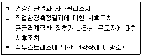
- ㄱ, ㄴ
- ㄱ, ㄹ
- ㄱ, ㄷ, ㄹ
- ㄴ, ㄷ, ㄹ
- ㄱ, ㄴ, ㄷ, ㄹ
(정답률: 40%)
75. 다음에서 설명하는 화학물질은?
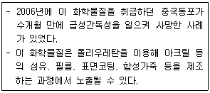
- 벤젠
- 메탄올
- 노말헥산
- 이황화탄소
- 디메틸포름아미드
(정답률: 70%)
근로자대표는 작업환경측정의 결과를 통지할 것을 사업주에게 요청할 수 있고, 사업주는 이에 성실히 응하여야 한다. - 옳은 설명입니다.
야간에 필요한 안전ㆍ보건표지는 야광물질을 사용하는 등 쉽게 알아볼 수 있도록 제작하여야 한다. - 옳은 설명입니다.
안전ㆍ보건표지의 성질상 설치하거나 부착하는 것이 곤란한 경우에는 해당 물체에 직접 도장(塗裝)할 수 있다. - 옳은 설명입니다.
사업주는 산업안전보건법과 산업안전보건법에 따른 명령의 요지를 상시 각 작업장 내에 근로자가 쉽게 볼 수 있는 장소에 게시하거나 갖추어 두어 근로자로 하여금 알게 하여야 한다. - 옳은 설명입니다.